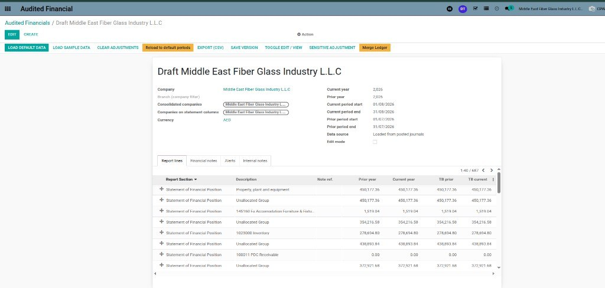
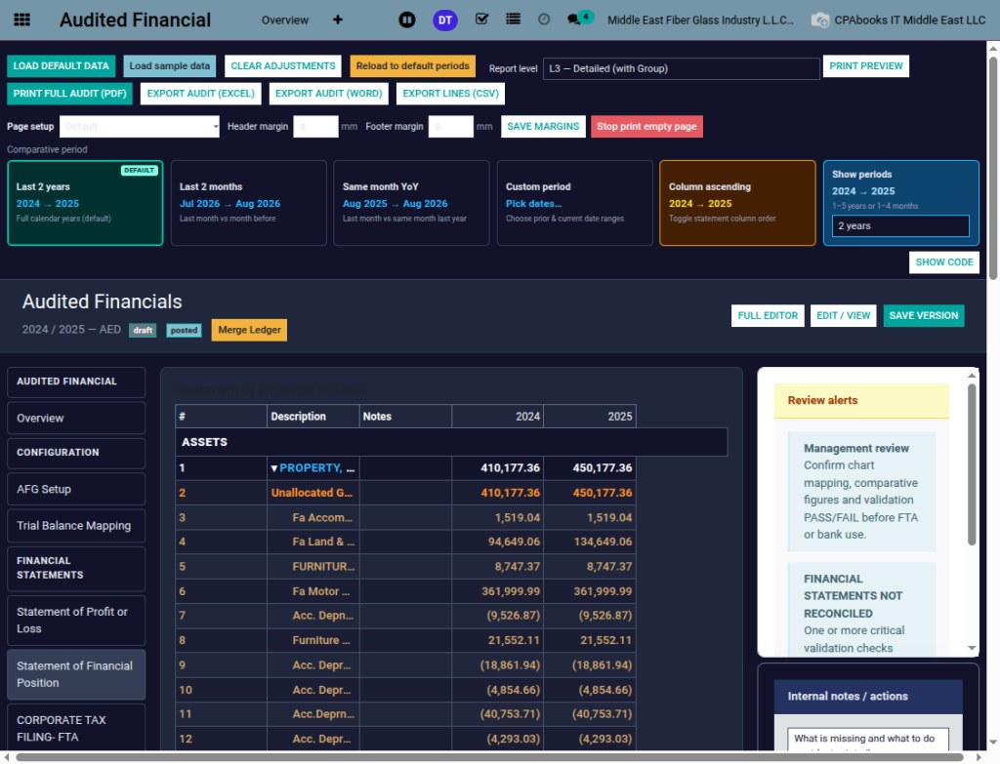

Product Tour
See AFG in Action
Real product screenshots from the reporting workspace.
FEATURE 01
Company & Period Setup
Configure the company, reporting periods, comparative periods and financial statement data from one place.
- ✓ Multi-Company Support
Single or consolidated companies - ✓ Flexible Period Selection
Yearly, monthly or custom periods - ✓ Multi-Currency
Supports AED and other currencies - ✓ Live Odoo Data
From posted Odoo journals


FEATURE 02
Generate Complete Financial Packs
Create professional statements with flexible periods, comparative columns and multiple report levels.
- ✓ Comparative Reporting
Current year vs prior year - ✓ Multiple Report Levels
Official / FTA / Bank or detailed working reports - ✓ Print Preview
Review before finalizing - ✓ Export
PDF, Excel, Word and CSV
FEATURE 03
Configure Your Financial Structure
Map your Odoo chart of accounts into structured AFG financial statement groups.
- ✓ Predefined Report Sections
P&L, Balance Sheet, Cash Flow, Equity, PPE - ✓ Unmapped Account Review
Identify accounts that still need attention - ✓ Configure Once, Report Anytime
Reuse structure across periods

FEATURE 04
Generate, Review & Finalize
Review statements, compare periods, catch mapping issues and finalize from one workspace.
- ✓ Review Alerts
Surface issues before publishing - ✓ Validation Checks
Confirm statements are ready - ✓ Save Versions & Export
PDF, Excel, Word and CSV